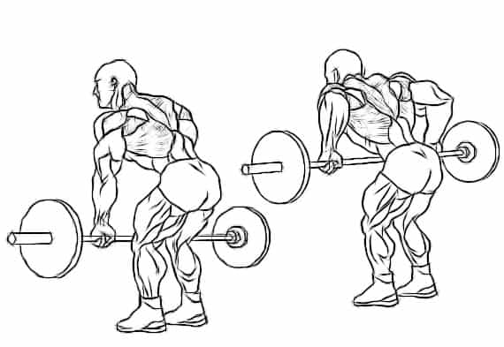
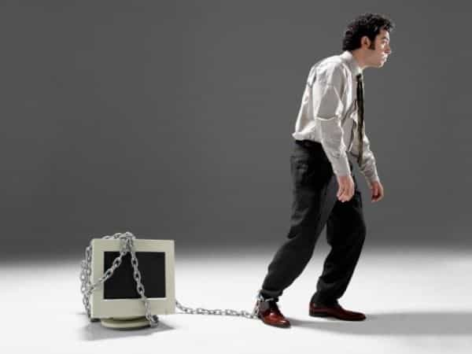
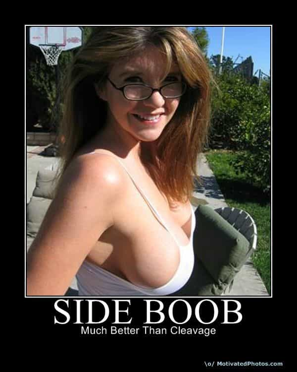

David is a strength coach and bestselling Men's Health author. You can follow him at HowToBeast.com.


If I were to survey every guy in my gym and ask them what’s their favorite lift I imagine bench press would be the overwhelming answer. And that’s just what I’ve come to expect in today’s disappointing everybody-follow-the-leader culture.
However, If I changed my question and instead asked what’s the best exercise you can do, many would probably stick with their original answer firmly believing that the bench press is, in fact, magical. But some would smarten up and say the squat or the deadlift. And in terms of the most muscles worked per exercise or the highest degree of difficulty those last two answers aren’t wrong. But, if I had to prescribe just one exercise to the average man today, it wouldn’t be any of those.
I’d instead opt for the back row. I’m not overly concerned about which back row you choose – it could be the seated cable row, the TRX row, the inverted bodyweight row, the T-Bar row, the single arm dumbbell row, or my personal favorite, the bent over barbell row.

The row is so vital for men to perform in this day and age because it serves to correct the biggest postural problem our society faces: the forward slouch. This is when your shoulders round forward and you look like the humpback of Notre Dame.
Today, everything we do is in front of us: we lean forward to type on computers, we drive our cars using steering wheels that we grip in front of us, and then we goto the gym and we make matters worse. We bench press, we cycle, and we run – all anteriorly dominant movements that make this problem even worse. The end result is a severely overdeveloped chest and anterior shoulder muscles, coupled with a disturbingly loose and weak upper back. This is the cause of weak posture.

Instead of standing straight and tall, we slump forward and appear nervous. We appear shorter and less confident. And the problem extends far beyond appearances. Recent studies have even linked our physical stature to our mental attitude. When we stand up straight and take up large amounts of space, we assume a matching and measurably more confident mindset. When we cower and slouch forward, we similarly adopt a matching mindset – this time timid and weak. If men weren’t already getting soft enough as it is, this only intensifies the depressing downward trend.
If your posture isn’t perfect you must act now to fix this problem. Forget building muscle or cutting fat, when you strengthen your back, stretch your chest, and begin to assume a correct posture – you’ll look far more confident and strong. You’ll shoulders will appear broader, and your chest bigger. You’ll feel the same way, too. And it will take only a fraction of the time to see a big difference when compared to trying to alter your body composition.

While this article is aimed at men, women should take note too–correcting their posture will lead to visibly larger breasts and a more perky appearance, two things all men find attractive.
Check out my new book Shredded Beast, for more advice on building a strong, manly body. To see reviews and more info: click here.
Read More: The Only 2 Things A Man Can Depend On